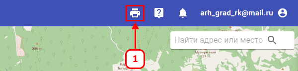
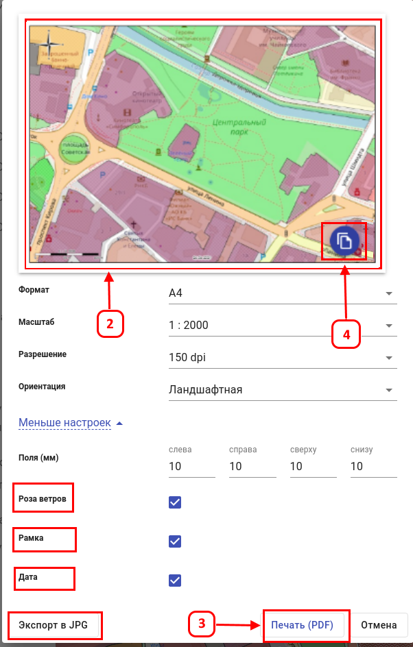

Для распечатки фрагмента карты требуется:
-
На верхней панели кликнуть ЛКМ на значок(1) «Печать».
-
В окне предварительного просмотра печати разместите изображение карты посредством перетаскивания карты(2)
Укажите требуемые параметры печати, а затем нажмите на кнопку «Печать(PDF)»(3).
В результате формируется и скачивается pdf документ, можно Экспортировать файл в JPG
В меню дополнительных настроек можно выбрать параметры, можно задать параметры печати:
Поля (мм) — отступ от края листа
Роза ветров — указатель на север
Рамка — граница изображения для печати
Дата — текущая дата на листе
Кнопка «Копировать»(4), позволяет скопировать изображение в буфер обмена для вставки в MS Word и мессенджеры.

